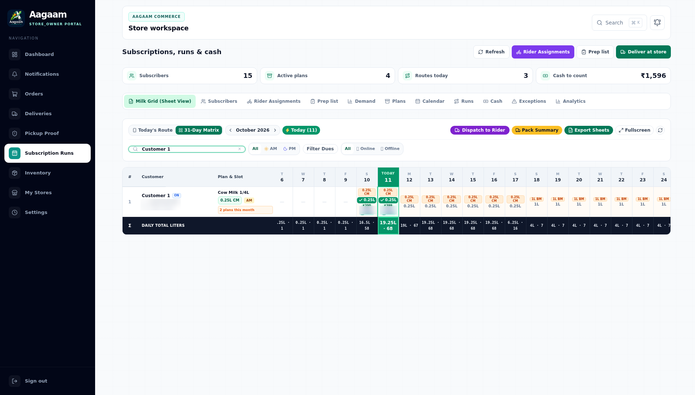
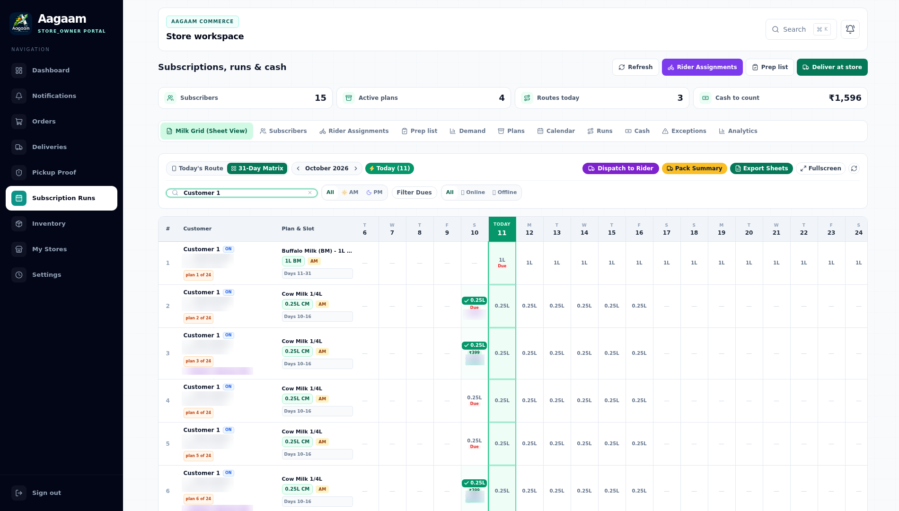

| Repository | Saikumar-bali/AAGAM_E-commerce |
| App | apps/admin-dashboard (Next.js 15 App Router) — serves Shop, Store, Rider and Admin surfaces |
| Date | 2026-10-11 |
| Database | Sandbox Postgres, DATABASE_URL=$AAGAAM_DATABASE |
| Method | Headless Chromium (Playwright) driving the real UI — no direct API calls |
The web app is one Next.js build (apps/admin-dashboard) that serves every browser role by route group. The API gateway is a separate NestJS service; the dashboard proxies /api/* to it, so the browser stays same-origin.
| Surface | Route group | Example route |
|---|---|---|
| Shop (customer) | (shop)/shop | /shop/subscriptions |
| Store portal | (store)/store | /store/subscriptions |
| Rider portal | (rider)/rider | /rider/runs |
| Admin dashboard | (admin)/admin | /admin/riders |
| Auth | (auth) | /login |
Build the shared packages first, then start the gateway and the dashboard:
# 1. shared packages (types, utils, database) — the dashboard imports them
npm run build --workspace=packages/types
npm run build --workspace=packages/utils
npm run build --workspace=packages/database # also runs prisma generate
# 2. api-gateway on :3005 against the sandbox database
cd apps/api-gateway
set -a && source .env && set +a
export DATABASE_URL="$AAGAAM_DATABASE"
node dist/src/main.js # after `npm run build --workspace=apps/api-gateway`
# 3. Next.js dashboard on :12000
cd apps/admin-dashboard
npm run build && npx next start -p 12000
next.config.js rewrites /api/:path* →
API_BACKEND_URL (default http://127.0.0.1:3005). Keep the gateway on
:3005 or set API_BACKEND_URL to match.
Every check below was performed by loading the real pages in a browser and reading the rendered DOM — never by calling the API directly. Every screenshot in this guide is redacted before commit: customer phone numbers, street addresses and rider names are blurred, per the aagam-testing skill rule “never write a password, cookie, token or phone number into a screenshot”. The work-host URLs used were:
| Link | Purpose |
|---|---|
https://work-1-lkhufuuxeteqzqdl.prod-runtime.all-hands.dev/ (port 12000) | Next.js web app — Shop, Store, Rider, Admin |
https://work-2-lkhufuuxeteqzqdl.prod-runtime.all-hands.dev/ (port 12001) | Mobile react-native-web previews (partners + customer) and the same-origin API proxy |
Open /login. The form takes a phone or email and a password (password mode is the default; phone OTP is disabled in this build). A store owner lands on /store.

Figure 1 — /login: single “Phone or email” field plus password, then Continue.
After signing in, /store renders the store workspace: four summary cards (My stores, Products, Orders, Revenue) plus the store list. The catalogue cards read 0 for this freshly seeded workspace; the live subscription counters (Subscribers, Active plans, Routes today, Cash to count) are on the Subscriptions page shown next.

Figure 2 — /store: workspace summary and store list as captured.
/store/subscriptions opens on the Milk Grid tab: one row per live contract (a single-plan customer keeps one row, a customer with two live plans gets two), one cell per day of the month, with Total L, Paid, Due and a Bill action. The search box filters by customer, phone or locality.

Figure 3 — Milk Grid (Sheet View): contract rows and their day cells. The Total L / Paid / Due / Bill columns follow the day grid to the right (visible in Figure 4).
Clicking Bill on a row opens the Monthly Bill Statement modal; it renders the row's reconciled money and the customer's WhatsApp message once the itemised bill finishes generating. The capture below catches it mid-load — the grid behind it already shows the row's Paid ₹1,796.00 / Due ₹9,781.00 columns.

Figure 4 — Monthly Bill Statement modal generating the itemised bill; the grid behind shows the row's Paid / Due columns.
Two defects were found and fixed in this area. BUG-028: a merged row under-reported money — a delivered day cell that collected only part of its due was clamped out of the row's Due column. BUG-029: the merged-row model itself — when one customer held two live plans, the grid drew a single row, and a day both plans delivered kept only one plan's cell. This branch ships one row per live contract and keeps BUG-028's per-contract reconciliation.
₹399 cell showing ₹200).₹200, but the row read
Paid ₹1,796.00 / Due ₹0.00. The ₹199 the customer still owes for that day is invisible,
so the store stops chasing the balance.

Figure 5 — the merged row used for the BUG-028 repro: the day-10 cell collected ₹200 of its ₹399 due. The row's Due column read ₹0.00 pre-fix; the money columns sit past the right edge of this capture (Figure 4 shows them after the fix).
StoreMilkGridService.getGrid() reconciled the active contract's ledger against every merged contract's deliveries:
reconcileSubscriptionBalance(activeSub, custSubs.flatMap((sub) => sub.deliveries))A sibling contract whose ledger was already fully paid pushed deliveryCash above the active ledger, so the helper's Math.max(0, storedDue - drift) clamped the under-collected contract's residual to zero.
Money is reconciled per contract — every grid row reconciles its own contract against its own deliveries:
const reconciled = reconcileSubscriptionBalance(activeSub, activeSub.deliveries);BUG-029 then removed the merging itself, so BUG-028's cross-contract clamping is moot: the grid emits one row per live contract, each with its own day cells, litres, riders and reconciled money. A customer whose plans are all terminal keeps a single (most recent completed) row and still counts once in totalSubscribers.
store-milk-grid.service.spec.ts pins both defects:
totalDuePaise = 19900.
Figure 6 — before: one merged row (badge 2 plans this month), labelled with the Cow plan. Cow 0.25L cells run days 10–16, but the Buffalo 1L plan (Days 11–31 in Figure 7) is missing from days 11–16 — its same-day cell was overwritten. Buffalo cells only appear from day 17, where the Cow plan ends.

Figure 7 — after: one row per live contract (plan 1 of 24 …). Buffalo Days 11–31 and Cow Days 10–16 each keep their own day cells, litres and paid/due state.
| Check | How (UI) | Result |
|---|---|---|
| Web app serves | Load /, /login, /store/subscriptions, /admin | 200 |
| Store login | Submit store@aagam.com on /login | lands on /store |
| Milk grid loads | Read rendered contract rows, day cells + Paid/Due columns | live data |
| Statement modal | Click Bill on a row | opens (itemised bill resolves asynchronously) |
| Console errors | Collect page + console errors during the session | none (only the optional Google sign-in 403) |
| BUG-028 | Compare row Due before/after fix | ₹0.00 → ₹9,781.00 |
| BUG-029 | Two live plans for one customer → one row per contract | independent rows |
403 /
GSI_LOGGER console entry when the page origin is not an allowed OAuth origin;
it does not affect email/password login.
skills/aagam-testing/references/bug-register.md — BUG-028 and BUG-029 entries.skills/aagam-testing/references/store-grid.md — grid litre/money assertions.apps/api-gateway/src/subscriptions/subscription-balances.ts — the reconciliation helper.